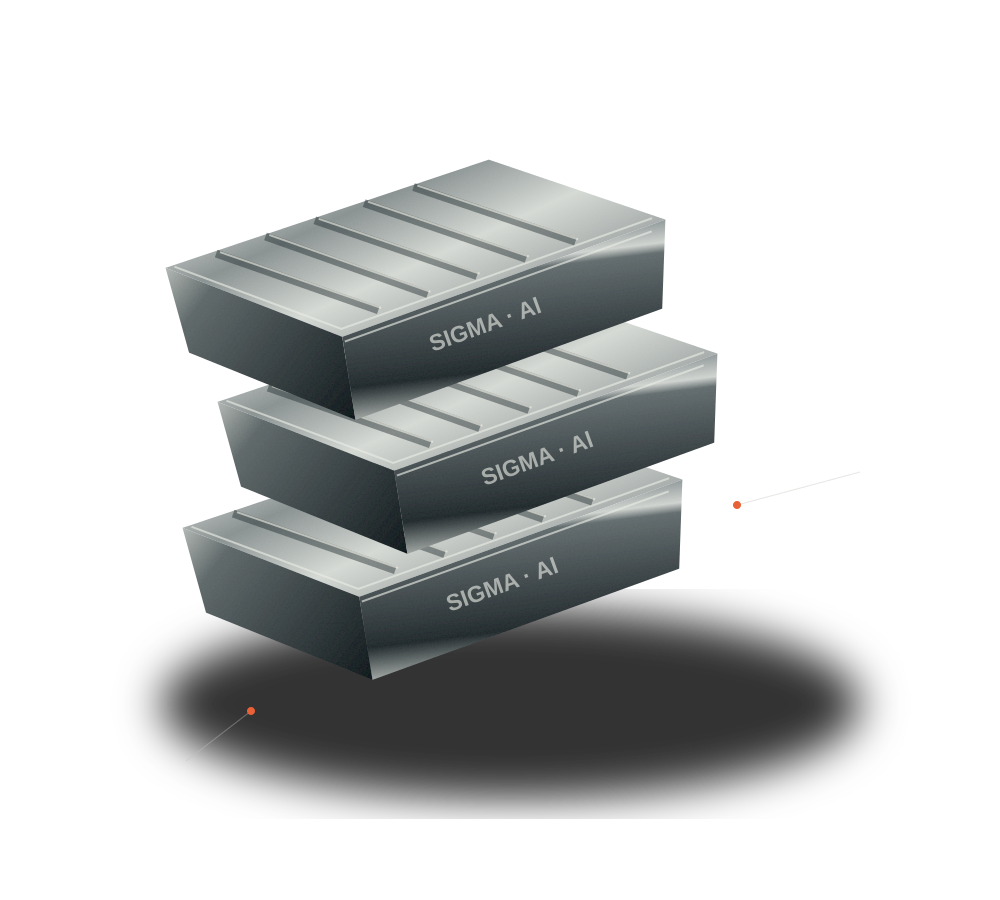

MATERIAL STUDY — 001

Al
RECAST. REFORM. REIMAGINE.ALUMINUM
無限循環，無限可能
13無限循環，無限可能
RECYCLING FOR A BETTER TOMORROWSCROLL TO EXPLORE ↓
01 / THE SIGMA PERSPECTIVE
循環，是我們的起點。資源沒有終點。
只有下一次開始。
1978年
創立於臺灣
120萬噸+
集團年產能
100+
鋁合金產品規格
9大
生產基地
集團數據依原站公司介紹，實際供應能力與規格請洽新格確認。
02 / MATERIAL SOLUTIONS
為每一種可能，找到對的材料。好材料。
成就下一步。
從精密鑄造到高端板帶材，
以再生合金，連接產業的不同需求。
不確定適合哪種材料？從您的應用需求開始。
討論您的材料需求 ↗03 / BUILT FOR CIRCULARITY
不是一次使用，而是不斷新生。讓循環，
真正發生。
不只回收金屬，更重新設計資源的旅程。
讓每一個環節，都為下一次製造做好準備。
01回收與分選
+
以廢舊金屬為原料，透過分選與預處理，讓資源重新進入材料供應鏈。
02熔煉與精煉
+
透過熔煉、成分調整與精煉，將再生原料轉化為符合應用需求的鋁合金。
03品質驗證
+
從材料成分到製程品質，依產品規格與客戶要求進行檢測。原站列有 ISO 與 IATF 管理體系，具體適用範圍請向供應基地確認。
04合金與鋁液供應
+
依不同應用提供合金材料，並以鋁液直供串連壓鑄成型，減少重複熔煉環節。
05副產物再利用
+
自 2017 年成立環保科技事業部，發展鋁灰無害化處理與資源化利用，延伸循環價值。
04 / CONNECTED WORLDWIDE
在地製造，全球連結。世界很大。
合作可以很近。
從臺灣到全球產業鏈，以生產基地與貿易網路連結原料、材料與製造需求。
高雄生產基地
集團臺灣生產佈局；SBI 為原站列示的 LME 註冊品牌之一。
9 生產基地3 跨洲產業網路∞ 循環可能
生產與貿易網路概念示意，非精確地理定位。
05 / LET’S MAKE WHAT’S NEXT
下一次合作，從這裡開始。